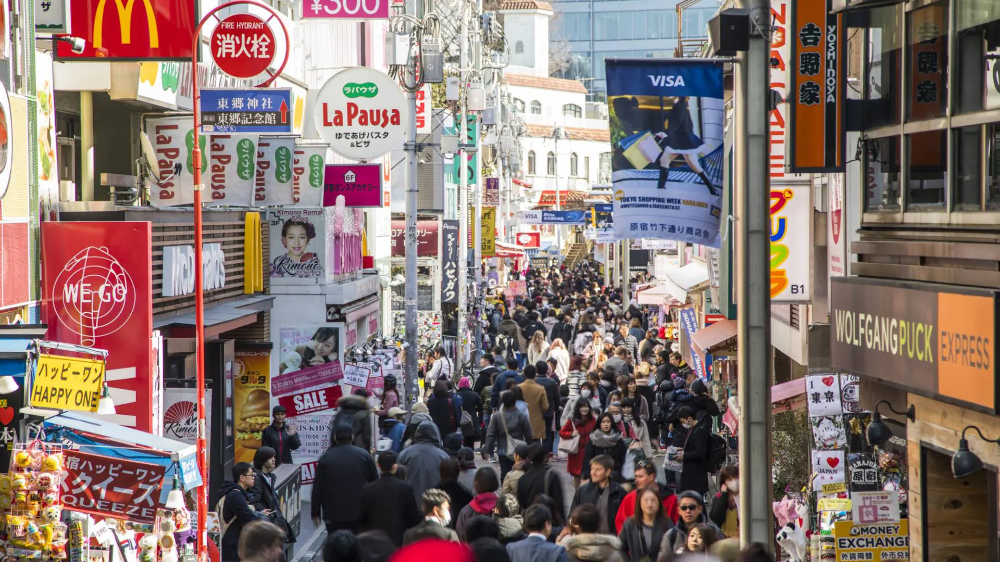
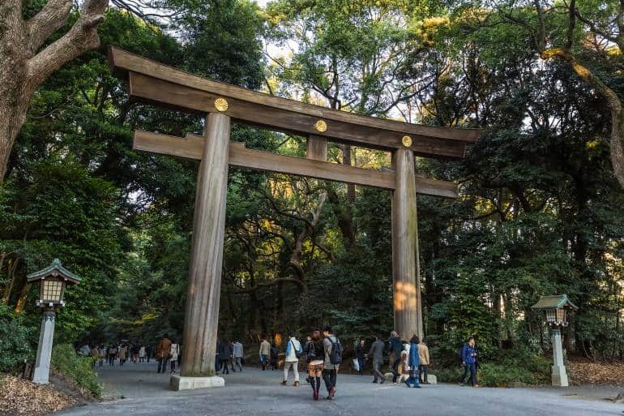
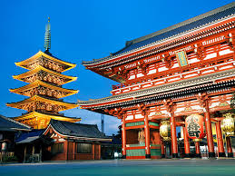

📍 Tokyo · Full day highlights tour
Tokyo
Highlights
Shibuya, Asakusa, Harajuku & more — with local insight at every stop.
From the electric scramble of Shibuya to the forest paths of a centuries-old shrine, this tour threads together the very best of Tokyo — blending ancient tradition with breathless modernity, each stop chosen for its story as much as its spectacle.

A 350-metre pedestrian lane that launched global youth fashion trends. Takeshita Street is an explosion of colour, noise, and creativity — crepe stalls compete with vintage boutiques and kawaii candy shops in a corridor designed entirely for maximum sensory overload. It's Tokyo's most self-consciously expressive neighbourhood, where subcultures that might seem extreme anywhere else are simply everyday wear. Wander freely; there's no wrong direction.

A ten-minute walk from the chaos of Harajuku brings you to one of the most serene places in all of Tokyo. Meiji Shrine sits within a 70-hectare evergreen forest — home to 120,000 trees — dedicated to Emperor Meiji and Empress Shōken. The approach through towering torii gates feels like entering another world. Visitors write wishes on ema wooden plaques, watch wedding processions, or simply stand still and let the silence be the experience.

Tokyo's oldest and most visited temple has drawn worshippers since 645 AD. Pass beneath the great Kaminarimon gate — its lantern alone weighs 670 kg — and walk Nakamise-dōri, a covered lane of traditional snack stalls and souvenir shops that has been trading for over 200 years. The incense smoke at the main hall is said to bring good health; cup it toward you before stepping inside to pray.

No image prepares you for the real thing. The moment the lights turn red in every direction, hundreds of people surge from all sides at once — a perfectly orchestrated urban ballet that has defined Tokyo's image worldwide. On peak evenings, close to 3,000 people cross in a single cycle. Yet somehow, nobody bumps into anyone. Watch from the famous Starbucks above for a bird's-eye view, then plunge into the chaos yourself.

Once a private garden for the Imperial family, Shinjuku Gyoen is now Tokyo's most beloved public park — and for good reason. Within its 58 hectares, three distinct garden styles coexist: formal French gardens, open English landscape, and a classical Japanese stroll garden with koi ponds and a traditional tea house. In cherry blossom season it becomes almost mythically beautiful, but it rewards a visit in any month.
At 634 metres, Tokyo Skytree is the tallest tower in the world — and its height wasn't chosen by accident. The digits 6, 3, and 4 spell "Musashi" in old Japanese, honouring the historic province on which Tokyo stands. From the Tembo Deck at 350 m, on a clear day, the entire Kanto Plain unfolds below you: the grid of Tokyo giving way to mountains on one side, Tokyo Bay on the other, and on exceptional days, the snow-capped peak of Mount Fuji 100 km away.